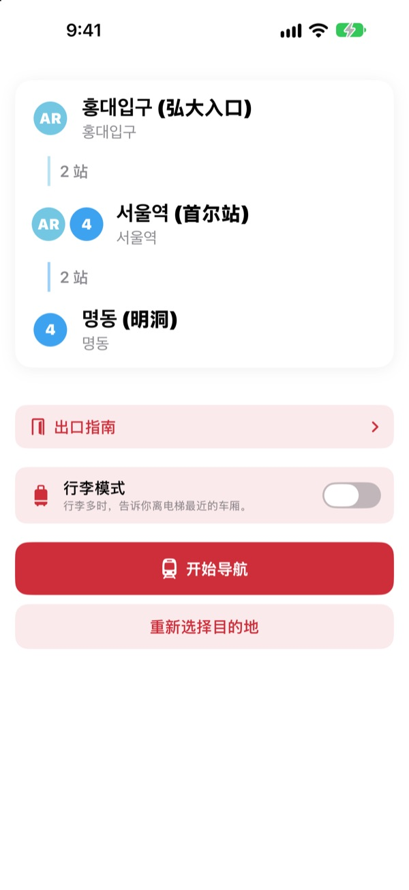
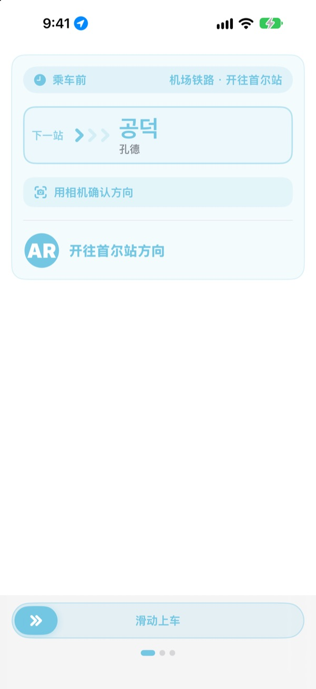
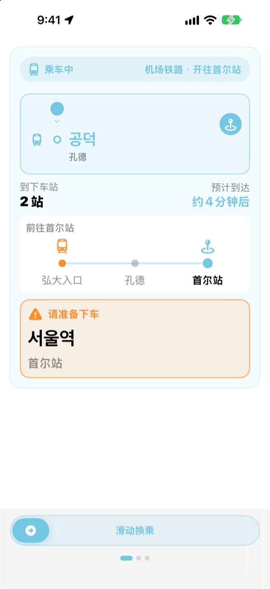
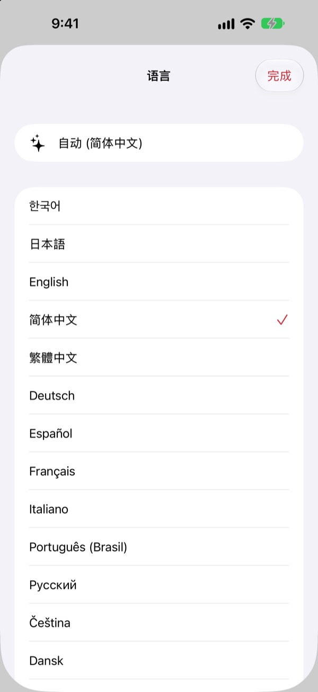

从上车方向
到下车站
选好出发站和目的站，KORA 就按站台上“开往○○”的原样告诉你该坐哪班车。乘车时它会跟踪你所在的车站，快到站时提醒你下车。
路线查询、乘车方向和实时到站信息均免费。

试坐一趟
从机场铁路弘大入口站出发。选一个下车站，点“开始导航”，就能像在 App 里一样依次看到乘车方向和下车提醒。
站在站台上，不知道该坐哪个方向？
地图 App 只告诉你线路，站台上却只有写着陌生站名的“开往○○”指示牌。坐反了方向就得倒回好几站，没听清广播又会坐过站。KORA 用和指示牌一样的说法告诉你该坐哪班车，快到站时提前提醒你。
和指示牌一样的说法
该坐的列车直接按站台和车身上“开往○○”的原样显示。拿不准时，把相机对准站台指示牌或列车终点站显示屏，马上就能知道方向对不对。
文字识别完全在 iPhone 上完成。

不再坐过站
结合实时到站信息、GPS、列车的发车与停车以及车内广播，随时知道你在哪一站。快到站时提示“请准备下车”，到站时提示“请立即下车!”，并伴有振动。
在锁定屏幕和灵动岛上也能看到行程进度。

23 种语言，站名保留原文
整个 App 支持 23 种语言，默认跟随手机语言。站名在韩文原名旁边显示中文、片假名或站牌上的罗马字拼写，在站台上一眼就能对上。

三步开始
- 1
确定出发站
用 GPS 找到最近的车站，或者手动选择。
- 2
选择目的站
换乘、站数和该坐的列车立刻显示出来。
- 3
点“开始导航”
该下车时，屏幕和振动会提醒你。
各项权限的用途
- 定位
- 查找最近的车站
- 相机
- 读取站台指示牌和列车终点站显示，确认方向
- 麦克风与语音识别
- 从车内广播中听出站名和开门方向
- 运动与健身
- 检测列车发车与停车，让当前车站更准确
所有权限都是可选的。即使不允许，也可以手动选站，照样使用路线指引和下车提醒。定位、相机和广播都只在设备上处理，不会录音、保存或上传。
查路线永远免费，乘车导航用 KORA Pro
免费
- 路线查询与换乘指引
- 该坐列车的“开往○○”显示
- 实时到站信息
- 用相机确认方向
- 乘车时的当前车站与下车提示画面
- 前三次行程可使用全部 Pro 功能
KORA Pro
- 每次行程都有锁定屏幕导航、广播识别和下车振动提醒
- 出口指南：首尔地铁 1～8 号线各出口周边地点
- 末班车提醒：1～9 号线末班车时间
- 行李模式：1～8 号线离电梯最近的车厢
一次购买，长期使用，不是订阅。
免费次数用完后照样可以乘车。屏幕上的进度显示不变，只暂停锁定屏幕导航、广播识别和振动。
常见问题
找不到最近的车站，或显示了错误的车站
请前往 设置 > 隐私与安全性 > 定位服务 > KORA，选择“使用App期间”，并打开“精确位置”。在地下或大型建筑内 GPS 可能不准，可以点屏幕顶部的当前车站卡片手动选站。不开定位也能使用全部功能。
怎样用相机确认方向？
显示路线后打开相机确认方向，让站台指示牌或列车终点站显示（“开往○○”）占满画面。对准韩文标识时最准确。太暗、太远或角度太斜时，请靠近一点正对着拍。结果仅供参考，拿不准时请同时看看站内指示牌。
实时到站信息不显示
实时到站信息由首尔开放数据广场提供，需要联网，主要覆盖首尔都市圈线路。没有网络或该线路没有实时信息时，KORA 会自动改用基于时刻表的估算以及 GPS 和加速度计，继续为你导航。路线查询不需要联网。
下车提醒有点早或有点晚
地下区段 GPS 信号弱，当前车站的判断可能滞后。允许使用麦克风后，KORA 会借助车内广播校正位置，更加准确。提醒仅供参考，请同时留意广播和站名标识。
怎么切换语言？
默认跟随手机语言。在主画面长按车站卡片（当前车站或目的站）即可打开语言选择，从 23 种语言中挑选。
锁定屏幕上看不到实时活动
请在 设置 > App > KORA（较早的 iOS 为 设置 > KORA）中确认已打开“实时活动”。开始乘车导航后才会出现，完全关闭 App 时也会一起结束。灵动岛只在配备它的 iPhone 上显示。
支持哪些城市？
首尔都市圈（首尔、京畿、仁川，含 GTX-A、机场铁路、新盆唐线和轻轨）、釜山、大邱、光州、大田，共约 930 个车站。可以用选站画面顶部的地区标签切换城市。
出发去韩国前能先试用吗？
可以。手动选好出发站和目的站，在世界任何地方都能提前查看路线、换乘和乘车方向。
KORA Pro 是订阅吗？
不是。一次购买即可长期使用，并支持家人共享。重新安装 App 后，在 Pro 页面点“恢复购买”即可。
个人信息如何处理？
无需注册账号，也没有广告。定位、相机和广播识别都在设备上处理，不会保存或上传。为了改进 App，我们只收集匿名的使用统计。
支持辅助功能吗？
KORA 支持旁白（VoiceOver）和更大字体。欢迎随时提出无障碍方面的改进建议。
缺少车站、站名有误或有其他问题，请发邮件至 mizzking75@gmail.com。写上 App 版本、iPhone 机型和所用的车站，我们能更快处理。